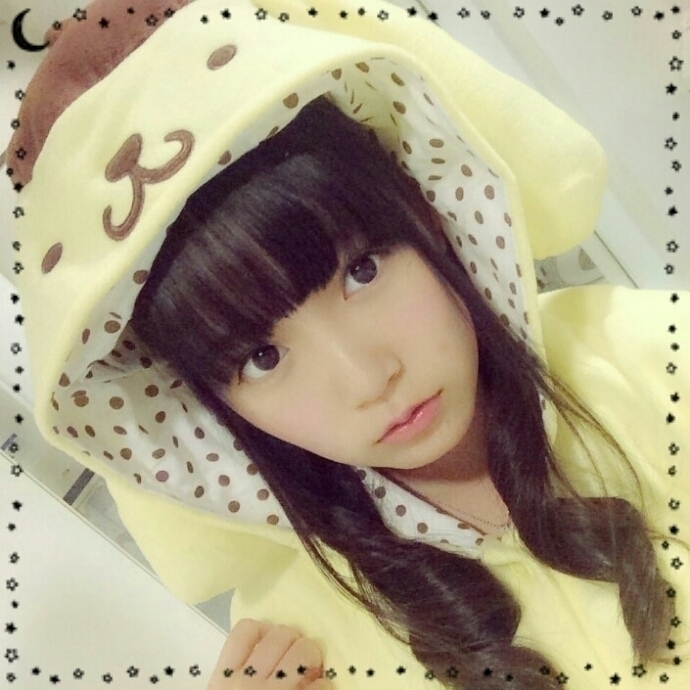
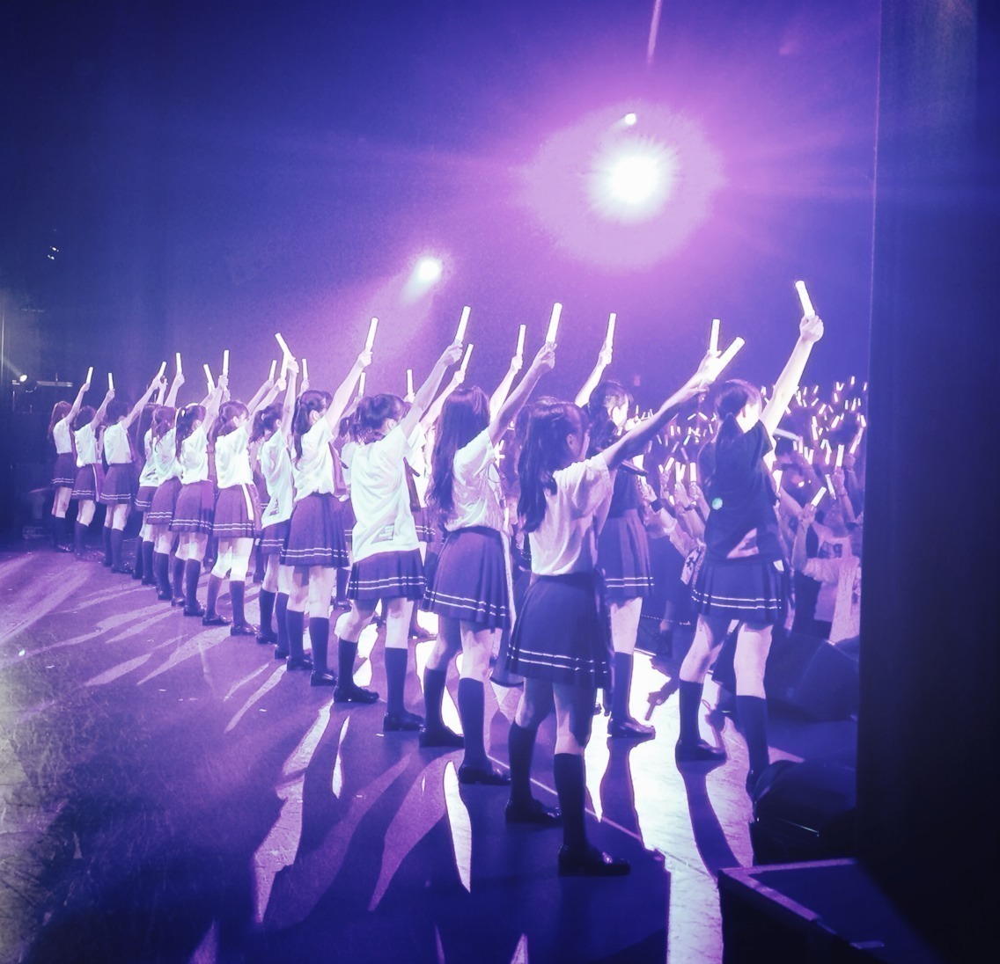
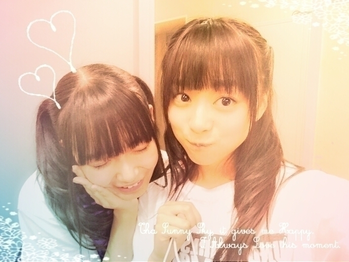
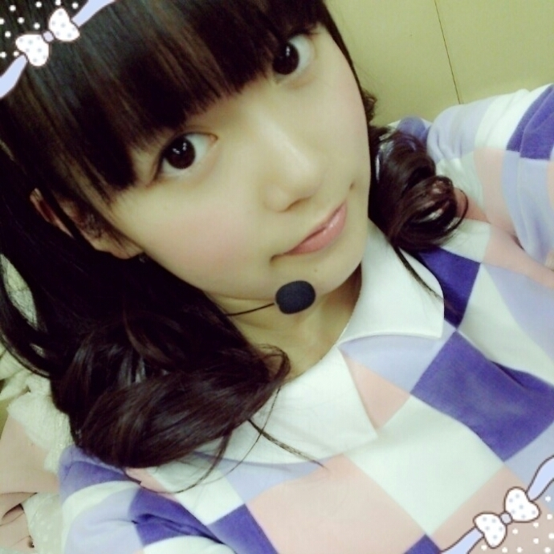

| 2014/10 20 Mon | ひめたん-OoO-その490 |
まず横浜個握。
来てくださったみなさん
ありがとう＼(^o^)／
お留守番ちーむのみなさん
報告するよ～
1・2部 ポムポムプリンちゃん

3・4部 リボンプリンセス

「リボンプリンセス」ってのは
この衣装のキャッチコピーとゆーか
パッケージにそう表記されてるの！
買うしかーってなるでしょ(゜ω゜)
そして気がつけば私
サンリオキャラクター大好きすぎる問題。
おにゃのこもだけど
ぼーいずも結構みんな
ポムポムプリンちゃん知ってて驚いた♡
アンダーライブの感想と
乃木どこ、のぎ天、
エンタメ、MARQUEE が多かったかな？
いつもチェックしてくれてありがとう♡
ハロウィンコスプレ
着ぐるみもワンピースも
どちらも誉めてもらったり(ノ)･ω･(ヾ)

千秋楽を迎えました
アンダーライブ 2nd season
毎回いろんなドラマがありましたが
無事千秋楽を迎えることができました
みなさんの応援のおかげです。
この期間濃かったな～
毎日収穫があって充実してた気がする！
「1人MC」のコーナーは
ひめたんはトップバッター
5日の昼公演を受け持ちました\( ˆoˆ )/
それで、照明からBGMから
何から何までこだわりを持って
スタッフさんにお願いをしましたよ～
「さようならひめたんびーむ」という
茶番劇をしました、ふざけた茶番のわりに
結構ガチで準備しました(笑)
私プレゼンってゆーか
こーゆー作業するの好きやなって
改めて思った(´-ω-`)
真面目の血が騒いだんだねきっと♡♡
5日昼公演行ったひとで
なんで僕の私の推しメンじゃねーんだよ
って思ったひとも
付き合ってくれてありがとう！
ライブ本編は
パフォーマンスにこだわった2nd。
「魅せる」ことに重点を置き
ダンスremixを作っていただいたり
乃木坂の楽曲にオリジナルの振り付けを
つけていただいたりしてみたんだけど
どうだったかな⊂( ˆoˆ )⊃？
個人的にはアンダーライブで
「バレッタ」を踊れたのが
とても嬉しかった！
前回のアンダーライブでは
1期生のみんなで披露できなくて
正直相当ショックだったの(笑)
だから今回は「バレッタ」を自分の
オリジナルフォーメーションで
歌うことができて良かった(＊´ω`＊)
「月の大きさ」「音が出ないギター」は
アンダーライブ初パフォーマンス。
どちらもアンダーライブver.に
構成し直していただいて
とってもかっこいいの！
「月の大きさ」は
一瞬ですがソロダンスパートがあって
スポットも独占できて最高でした～
そして「ガールズルール」❁
この曲は前回に引き続き
センターを努めさせていただきました
本当にありがたいです(；ω；)
オリジナルの「ガールズルール」に
まいやんの色があるように
今回はひめたんの色が
出せたらいいなと思いながら
頑張りましたよ～
ライブの回を重ねるごとに
次はこうしよう、ああしようって
いろいろ試してみたりして。
来てくれたみなさんの
感想が聞きたいな～
今回行けなかったんだってみなさんも
次もしライブする機会があったら
待ってるよ(っ´ω`c)
そうそう、イジリーさんやクロちゃんさん
他にもたくさんの方が
遊びに来てくれました！

最後に3人が卒業しましたね
お疲れ様！今までありがとう\( ˆoˆ )/
京ちゃんは
お誕生日が1日違いで
勝手に親近感を抱いてたの～＊
お勉強も頑張っていて
偉いなっていつも思っていたよ！
NOGIBINGO!2で面白いキャラも知って
いろんな顔を持っているんだなって
いつも会うのが楽しみだったよ
りしゃこは
のほほーんとしてて
みんなすっかり癒されたよね！
真面目で、連絡もちゃんとしてて
ごめんなさいとかありがとうが言える
優しい子ってイメージ。
りしゃこには夢があるんだよね？
叶いますように☆
寧々......
ひめたんはいつもふわふわしているようで
実は冷めたところもあるので(笑)
寧々のテンション感が居心地が良くて
大好きでした。
寧々はこれからやりたいことが
ハッキリしてるって言ってたから
その言葉を信じてずっと応援します( ˇωˇ )
アンダーライブで涙頃歌ってて
もう寧々と一緒に歌えるのは最後なんだって
一気に寂しくなってきて
大泣きで最後はまともに歌えてなかった......
涙頃はたくさん披露してきたけど
あんなに歌詞が染みた日はなかった～
乃木坂が在る限り
涙頃は寧々の曲として
ずっと語り継がれていくんだろうな。
3人とも自分と向き合って決断して
本当に尊敬します(；ω；)
不安になることも
あるかもしれないけれど
私が活動を頑張ることで3人の
背中を押していけるようになりたい。
自分で決めた道だから
自信持って 頑張ってね！

長くなっちゃったので
今日は質問返しおやすみさせてね
ごめんね( >_< )
でもちゃんと読んで元気もらってるよ♡
この期間で改めて
私に関わってくださるすべての方の
存在の大きさを感じました
いつもありがとう！
(＊´・ω・＊)
コメント(710)
2014/10/20 23:45